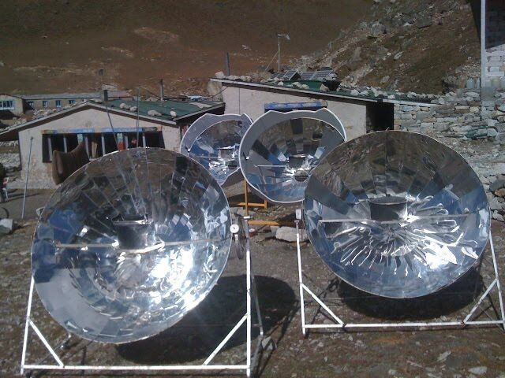
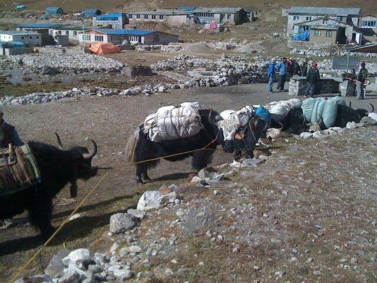

Den heutigen Tag haben wir nur in der Lodge verbracht.

Zuerst haben wir gefrühstückt und uns dann in die Sonne gesetzt. Es ist warm, solange die Sonne scheint. Sobald eine Wolke kommt, wird es kühl. Die Lodgen erzeugen hier Strom mit kleinen Sonnenkollektoren oder mittels Generator. Allerdings muss der Treibstoff dafür mit Yaks aus der Stadt hochgeschleppt werden. Einige Lodges haben auch "Sonnenöfen", die mit Spiegeln die Hitze in einem Punkt focussieren. Dort steht dann ein großer Topf mit Wasser, der aufgeheizt wird. Mit dem Wasser kann man sich dann duschen oder es wird zum Kochen benutzt.

Heute habe ich mit diesem Wasser geduscht und dabei Wäsche gewaschen. Das Wasser war heiß, aber die Dusche selbst kalt. Vor allem der Betonboden. Die Wäsche und meine Haare habe ich an der Sonne getrocknet.
Dann haben wir etwas gegessen und uns dann ein wenig hingelegt.
Nachmittags haben wir Karten gespielt. Eine große Truppe von 23 Kanadiern ist angekommen und macht aus dem Ort der Stille einen ziemlich lauten Platz. Später gab es Abendessen und wir haben noch ein bisschen Karten gespielt.
Das war es für heute.
Ach ja: Heute ist unser Hochzeitstag. Von hier aus viele Küsse und Umarmungen. Ich liebe Dich, Yeşim.